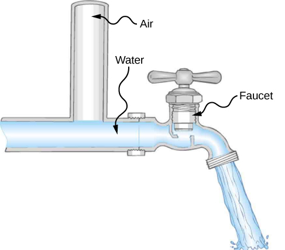
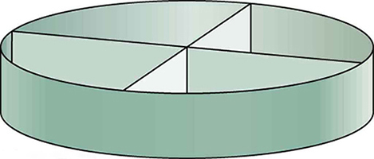
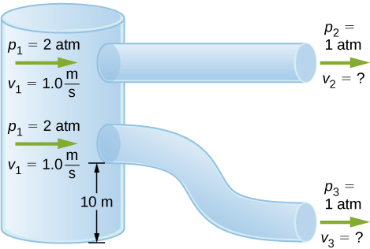

By the end of this section, you will be able to:
In Applications of Newton’s Laws, which introduced the concept of friction, we saw that an object sliding across the floor with an initial velocity and no applied force comes to rest due to the force of friction. Friction depends on the types of materials in contact and is proportional to the normal force. We also discussed drag and air resistance in that same chapter. We explained that at low speeds, the drag is proportional to the velocity, whereas at high speeds, drag is proportional to the velocity squared. In this section, we introduce the forces of friction that act on fluids in motion. For example, a fluid flowing through a pipe is subject to resistance, a type of friction, between the fluid and the walls. Friction also occurs between the different layers of fluid. These resistive forces affect the way the fluid flows through the pipe.
When you pour yourself a glass of juice, the liquid flows freely and quickly. But if you pour maple syrup on your pancakes, that liquid flows slowly and sticks to the pitcher. The difference is fluid friction, both within the fluid itself and between the fluid and its surroundings. We call this property of fluids viscosity. Juice has low viscosity, whereas syrup has high viscosity.
The precise definition of viscosity is based on laminar, or nonturbulent, flow. [link] shows schematically how laminar and turbulent flow differ. When flow is laminar, layers flow without mixing. When flow is turbulent, the layers mix, and significant velocities occur in directions other than the overall direction of flow.
Turbulence is a fluid flow in which layers mix together via eddies and swirls. It has two main causes. First, any obstruction or sharp corner, such as in a faucet, creates turbulence by imparting velocities perpendicular to the flow. Second, high speeds cause turbulence. The drag between adjacent layers of fluid and between the fluid and its surroundings can form swirls and eddies if the speed is great enough. In [link], the speed of the accelerating smoke reaches the point that it begins to swirl due to the drag between the smoke and the surrounding air.
[link] shows how viscosity is measured for a fluid. The fluid to be measured is placed between two parallel plates. The bottom plate is held fixed, while the top plate is moved to the right, dragging fluid with it. The layer (or lamina) of fluid in contact with either plate does not move relative to the plate, so the top layer moves at speed v while the bottom layer remains at rest. Each successive layer from the top down exerts a force on the one below it, trying to drag it along, producing a continuous variation in speed from v to 0 as shown. Care is taken to ensure that the flow is laminar, that is, the layers do not mix. The motion in the figure is like a continuous shearing motion. Fluids have zero shear strength, but the rate at which they are sheared is related to the same geometrical factors A and L as is shear deformation for solids. In the diagram, the fluid is initially at rest. The layer of fluid in contact with the moving plate is accelerated and starts to move due to the internal friction between moving plate and the fluid. The next layer is in contact with the moving layer; since there is internal friction between the two layers, it also accelerates, and so on through the depth of the fluid. There is also internal friction between the stationary plate and the lowest layer of fluid, next to the station plate. The force is required to keep the plate moving at a constant velocity due to the internal friction.
A force F is required to keep the top plate in [link] moving at a constant velocity v, and experiments have shown that this force depends on four factors. First, F is directly proportional to v (until the speed is so high that turbulence occurs—then a much larger force is needed, and it has a more complicated dependence on v). Second, F is proportional to the area A of the plate. This relationship seems reasonable, since A is directly proportional to the amount of fluid being moved. Third, F is inversely proportional to the distance between the plates L. This relationship is also reasonable; L is like a lever arm, and the greater the lever arm, the less the force that is needed. Fourth, F is directly proportional to the coefficient of viscosity, . The greater the viscosity, the greater the force required. These dependencies are combined into the equation
This equation gives us a working definition of fluid viscosity . Solving for gives
which defines viscosity in terms of how it is measured.
The SI unit of viscosity is . [link] lists the coefficients of viscosity for various fluids. Viscosity varies from one fluid to another by several orders of magnitude. As you might expect, the viscosities of gases are much less than those of liquids, and these viscosities often depend on temperature.
| Fluid | Temperature |
Viscosity |
|---|---|---|
| Air | 0 | 0.0171 |
| 20 | 0.0181 | |
| 40 | 0.0190 | |
| 100 | 0.0218 | |
| Ammonia | 20 | 0.00974 |
| Carbon dioxide | 20 | 0.0147 |
| Helium | 20 | 0.0196 |
| Hydrogen | 0 | 0.0090 |
| Mercury | 20 | 0.0450 |
| Oxygen | 20 | 0.0203 |
| Steam | 100 | 0.0130 |
| Liquid water | 0 | 1.792 |
| 20 | 1.002 | |
| 37 | 0.6947 | |
| 40 | 0.653 | |
| 100 | 0.282 | |
| Whole blood | 20 | 3.015 |
| 37 | 2.084 | |
| Blood plasma | 20 | 1.810 |
| 37 | 1.257 | |
| Ethyl alcohol | 20 | 1.20 |
| Methanol | 20 | 0.584 |
| Oil (heavy machine) | 20 | 660 |
| Oil (motor, SAE 10) | 30 | 200 |
| Oil (olive) | 20 | 138 |
| Glycerin | 20 | 1500 |
| Honey | 20 | 2000–10000 |
| Maple syrup | 20 | 2000–3000 |
| Milk | 20 | 3.0 |
| Oil (corn) | 20 | 65 |
What causes flow? The answer, not surprisingly, is a pressure difference. In fact, there is a very simple relationship between horizontal flow and pressure. Flow rate Q is in the direction from high to low pressure. The greater the pressure differential between two points, the greater the flow rate. This relationship can be stated as
where and are the pressures at two points, such as at either end of a tube, and R is the resistance to flow. The resistance R includes everything, except pressure, that affects flow rate. For example, R is greater for a long tube than for a short one. The greater the viscosity of a fluid, the greater the value of R. Turbulence greatly increases R, whereas increasing the diameter of a tube decreases R.
If viscosity is zero, the fluid is frictionless and the resistance to flow is also zero. Comparing frictionless flow in a tube to viscous flow, as in [link], we see that for a viscous fluid, speed is greatest at midstream because of drag at the boundaries. We can see the effect of viscosity in a Bunsen burner flame [part (c)], even though the viscosity of natural gas is small.
The resistance R to laminar flow of an incompressible fluid with viscosity through a horizontal tube of uniform radius r and length l, is given by
This equation is called Poiseuille’s law for resistance, named after the French scientist J. L. Poiseuille (1799–1869), who derived it in an attempt to understand the flow of blood through the body.
Let us examine Poiseuille’s expression for R to see if it makes good intuitive sense. We see that resistance is directly proportional to both fluid viscosity and the length l of a tube. After all, both of these directly affect the amount of friction encountered—the greater either is, the greater the resistance and the smaller the flow. The radius r of a tube affects the resistance, which again makes sense, because the greater the radius, the greater the flow (all other factors remaining the same). But it is surprising that r is raised to the fourth power in Poiseuille’s law. This exponent means that any change in the radius of a tube has a very large effect on resistance. For example, doubling the radius of a tube decreases resistance by a factor of .
Taken together, and give the following expression for flow rate:
This equation describes laminar flow through a tube. It is sometimes called Poiseuille’s law for laminar flow, or simply Poiseuille’s law ([link]).
Using Flow Rate: Air Conditioning Systems An air conditioning system is being designed to supply air at a gauge pressure of 0.054 Pa at a temperature of The air is sent through an insulated, round conduit with a diameter of 18.00 cm. The conduit is 20-meters long and is open to a room at atmospheric pressure 101.30 kPa. The room has a length of 12 meters, a width of 6 meters, and a height of 3 meters. (a) What is the volume flow rate through the pipe, assuming laminar flow? (b) Estimate the length of time to completely replace the air in the room. (c) The builders decide to save money by using a conduit with a diameter of 9.00 cm. What is the new flow rate?
Strategy Assuming laminar flow, Poiseuille’s law states that
We need to compare the artery radius before and after the flow rate reduction. Note that we are given the diameter of the conduit, so we must divide by two to get the radius.
Solution
Significance In general, assuming laminar flow, decreasing the radius has a more dramatic effect than changing the length. If the length is increased and all other variables remain constant, the flow rate is decreased:
Doubling the length cuts the flow rate to one-half the original flow rate.
If the radius is decreased and all other variables remain constant, the volume flow rate decreases by a much larger factor.
Cutting the radius in half decreases the flow rate to one-sixteenth the original flow rate.
Water pressure in homes is sometimes lower than normal during times of heavy use, such as hot summer days. The drop in pressure occurs in the water main before it reaches individual homes. Let us consider flow through the water main as illustrated in [link]. We can understand why the pressure to the home drops during times of heavy use by rearranging the equation for flow rate:
In this case, is the pressure at the water works and R is the resistance of the water main. During times of heavy use, the flow rate Q is large. This means that must also be large. Thus must decrease. It is correct to think of flow and resistance as causing the pressure to drop from to . The equation is valid for both laminar and turbulent flows.
We can also use to analyze pressure drops occurring in more complex systems in which the tube radius is not the same everywhere. Resistance is much greater in narrow places, such as in an obstructed coronary artery. For a given flow rate Q, the pressure drop is greatest where the tube is most narrow. This is how water faucets control flow. Additionally, R is greatly increased by turbulence, and a constriction that creates turbulence greatly reduces the pressure downstream. Plaque in an artery reduces pressure and hence flow, both by its resistance and by the turbulence it creates.
An indicator called the Reynolds number can reveal whether flow is laminar or turbulent. For flow in a tube of uniform diameter, the Reynolds number is defined as
where is the fluid density, v its speed, its viscosity, and r the tube radius. The Reynolds number is a dimensionless quantity. Experiments have revealed that is related to the onset of turbulence. For below about 2000, flow is laminar. For above about 3000, flow is turbulent.
For values of between about 2000 and 3000, flow is unstable—that is, it can be laminar, but small obstructions and surface roughness can make it turbulent, and it may oscillate randomly between being laminar and turbulent. In fact, the flow of a fluid with a Reynolds number between 2000 and 3000 is a good example of chaotic behavior. A system is defined to be chaotic when its behavior is so sensitive to some factor that it is extremely difficult to predict. It is difficult, but not impossible, to predict whether flow is turbulent or not when a fluid’s Reynold’s number falls in this range due to extremely sensitive dependence on factors like roughness and obstructions on the nature of the flow. A tiny variation in one factor has an exaggerated (or nonlinear) effect on the flow.
Using Flow Rate: Turbulent Flow or Laminar Flow In [link], we found the volume flow rate of an air conditioning system to be This calculation assumed laminar flow. (a) Was this a good assumption? (b) At what velocity would the flow become turbulent?
Strategy To determine if the flow of air through the air conditioning system is laminar, we first need to find the velocity, which can be found by
Then we can calculate the Reynold’s number, using the equation below, and determine if it falls in the range for laminar flow
Solution
Significance When transferring a fluid from one point to another, it desirable to limit turbulence. Turbulence results in wasted energy, as some of the energy intended to move the fluid is dissipated when eddies are formed. In this case, the air conditioning system will become less efficient once the velocity exceeds 0.16 m/s, since this is the point at which turbulence will begin to occur.
| Density of a sample at constant density | |
| Pressure | |
| Pressure at a depth h in a fluid of constant density | |
| Change of pressure with height in a constant-density fluid |
|
| Absolute pressure | |
| Pascal’s principle | |
| Volume flow rate | |
| Continuity equation (constant density) | |
| Continuity equation (general form) | |
| Bernoulli’s equation | |
| Viscosity | |
| Poiseuille’s law for resistance | |
| Poiseuille’s law |
Explain why the viscosity of a liquid decreases with temperature, that is, how might an increase in temperature reduce the effects of cohesive forces in a liquid? Also explain why the viscosity of a gas increases with temperature, that is, how does increased gas temperature create more collisions between atoms and molecules?
When paddling a canoe upstream, it is wisest to travel as near to the shore as possible. When canoeing downstream, it is generally better to stay near the middle. Explain why.
The water in the center of the stream is moving faster than the water near the shore due to resistance between the water and the shore and between the layers of fluid. There is also probably more turbulence near the shore, which will also slow the water down. When paddling up stream, the water pushes against the canoe, so it is better to stay near the shore to minimize the force pushing against the canoe. When moving downstream, the water pushes the canoe, increasing its velocity, so it is better to stay in the middle of the stream to maximize this effect.
Plumbing usually includes air-filled tubes near water faucets (see the following figure). Explain why they are needed and how they work.
Doppler ultrasound can be used to measure the speed of blood in the body. If there is a partial constriction of an artery, where would you expect blood speed to be greatest: at or after the constriction? What are the two distinct causes of higher resistance in the constriction?
You would expect the speed to be slower after the obstruction. Resistance is increased due to the reduction in size of the opening, and turbulence will be created because of the obstruction, both of which will clause the fluid to slow down.
Sink drains often have a device such as that shown below to help speed the flow of water. How does this work?
(a) Calculate the retarding force due to the viscosity of the air layer between a cart and a level air track given the following information: air temperature is , the cart is moving at 0.400 m/s, its surface area is and the thickness of the air layer is . (b) What is the ratio of this force to the weight of the 0.300-kg cart?
a. ; b.
The arterioles (small arteries) leading to an organ constrict in order to decrease flow to the organ. To shut down an organ, blood flow is reduced naturally to 1.00% of its original value. By what factor do the radii of the arterioles constrict?
A spherical particle falling at a terminal speed in a liquid must have the gravitational force balanced by the drag force and the buoyant force. The buoyant force is equal to the weight of the displaced fluid, while the drag force is assumed to be given by Stokes Law, Show that the terminal speed is given by , where R is the radius of the sphere, is its density, and is the density of the fluid, and the coefficient of viscosity.
proof
Using the equation of the previous problem, find the viscosity of motor oil in which a steel ball of radius 0.8 mm falls with a terminal speed of 4.32 cm/s. The densities of the ball and the oil are 7.86 and 0.88 g/mL, respectively.
A skydiver will reach a terminal velocity when the air drag equals his or her weight. For a skydiver with a large body, turbulence is a factor at high speeds. The drag force then is approximately proportional to the square of the velocity. Taking the drag force to be and setting this equal to the skydiver’s weight, find the terminal speed for a person falling “spread eagle.”
40 m/s
(a) Verify that a 19.0% decrease in laminar flow through a tube is caused by a 5.00% decrease in radius, assuming that all other factors remain constant. (b) What increase in flow is obtained from a 5.00% increase in radius, again assuming all other factors remain constant?
When physicians diagnose arterial blockages, they quote the reduction in flow rate. If the flow rate in an artery has been reduced to 10.0% of its normal value by a blood clot and the average pressure difference has increased by 20.0%, by what factor has the clot reduced the radius of the artery?
; The radius is reduced to 53.7% of its normal value.
An oil gusher shoots crude oil 25.0 m into the air through a pipe with a 0.100-m diameter. Neglecting air resistance but not the resistance of the pipe, and assuming laminar flow, calculate the pressure at the entrance of the 50.0-m-long vertical pipe. Take the density of the oil to be and its viscosity to be (or ). Note that you must take into account the pressure due to the 50.0-m column of oil in the pipe.
Concrete is pumped from a cement mixer to the place it is being laid, instead of being carried in wheelbarrows. The flow rate is 200 L/min through a 50.0-m-long, 8.00-cm-diameter hose, and the pressure at the pump is . (a) Calculate the resistance of the hose. (b) What is the viscosity of the concrete, assuming the flow is laminar? (c) How much power is being supplied, assuming the point of use is at the same level as the pump? You may neglect the power supplied to increase the concrete’s velocity.
a. ; b. ; c.
Verify that the flow of oil is laminar for an oil gusher that shoots crude oil 25.0 m into the air through a pipe with a 0.100-m diameter. The vertical pipe is 50 m long. Take the density of the oil to be and its viscosity to be (or ).
Calculate the Reynolds numbers for the flow of water through (a) a nozzle with a radius of 0.250 cm and (b) a garden hose with a radius of 0.900 cm, when the nozzle is attached to the hose. The flow rate through hose and nozzle is 0.500 L/s. Can the flow in either possibly be laminar?
a. Nozzle:
Flow is not laminar.
b. Hose:
Flow is not laminar.
A fire hose has an inside diameter of 6.40 cm. Suppose such a hose carries a flow of 40.0 L/s starting at a gauge pressure of . The hose goes 10.0 m up a ladder to a nozzle having an inside diameter of 3.00 cm. Calculate the Reynolds numbers for flow in the fire hose and nozzle to show that the flow in each must be turbulent.
At what flow rate might turbulence begin to develop in a water main with a 0.200-m diameter? Assume a temperature.
Before digital storage devices, such as the memory in your cell phone, music was stored on vinyl disks with grooves with varying depths cut into the disk. A phonograph used a needle, which moved over the grooves, measuring the depth of the grooves. The pressure exerted by a phonograph needle on a record is surprisingly large. If the equivalent of 1.00 g is supported by a needle, the tip of which is a circle with a 0.200-mm radius, what pressure is exerted on the record in Pa?
Water towers store water above the level of consumers for times of heavy use, eliminating the need for high-speed pumps. How high above a user must the water level be to create a gauge pressure of ?
30.6 m
The aqueous humor in a person’s eye is exerting a force of 0.300 N on the area of the cornea. What pressure is this in mm Hg?
(a) Convert normal blood pressure readings of 120 over 80 mm Hg to newtons per meter squared using the relationship for pressure due to the weight of a fluid rather than a conversion factor. (b) Explain why the blood pressure of an infant would likely be smaller than that of an adult. Specifically, consider the smaller height to which blood must be pumped.
a. ;
b. Since an infant is only approximately 20 inches tall, while an adult is approximately 70 inches tall, the blood pressure for an infant would be expected to be smaller than that of an adult. The blood only feels a pressure of 20 inches rather than 70 inches, so the pressure should be smaller.
Pressure cookers have been around for more than 300 years, although their use has greatly declined in recent years (early models had a nasty habit of exploding). How much force must the latches holding the lid onto a pressure cooker be able to withstand if the circular lid is in diameter and the gauge pressure inside is 300 atm? Neglect the weight of the lid.
Bird bones have air pockets in them to reduce their weight—this also gives them an average density significantly less than that of the bones of other animals. Suppose an ornithologist weighs a bird bone in air and in water and finds its mass is 45.0 g and its apparent mass when submerged is 3.60 g (assume the bone is watertight). (a) What mass of water is displaced? (b) What is the volume of the bone? (c) What is its average density?
a. 41.4 g; b. 41.4 cm3; c. 1.09 g/cm3. This is clearly not the density of the bone everywhere. The air pockets will have a density of approximately , while the bone will be substantially denser.
In an immersion measurement of a woman’s density, she is found to have a mass of 62.0 kg in air and an apparent mass of 0.0850 kg when completely submerged with lungs empty. (a) What mass of water does she displace? (b) What is her volume? (c) Calculate her density. (d) If her lung capacity is 1.75 L, is she able to float without treading water with her lungs filled with air?
Some fish have a density slightly less than that of water and must exert a force (swim) to stay submerged. What force must an 85.0-kg grouper exert to stay submerged in salt water if its body density is
12.3 N
The human circulation system has approximately capillary vessels. Each vessel has a diameter of about . Assuming cardiac output is 5 L/min, determine the average velocity of blood flow through each capillary vessel.
The flow rate of blood through a -radius capillary is . (a) What is the speed of the blood flow? (b) Assuming all the blood in the body passes through capillaries, how many of them must there be to carry a total flow of ?
a. . (This small speed allows time for diffusion of materials to and from the blood.) b. capillaries. (This large number is an overestimate, but it is still reasonable.)
The left ventricle of a resting adult’s heart pumps blood at a flow rate of , increasing its pressure by 110 mm Hg, its speed from zero to 30.0 cm/s, and its height by 5.00 cm. (All numbers are averaged over the entire heartbeat.) Calculate the total power output of the left ventricle. Note that most of the power is used to increase blood pressure.
A sump pump (used to drain water from the basement of houses built below the water table) is draining a flooded basement at the rate of 0.750 L/s, with an output pressure of . (a) The water enters a hose with a 3.00-cm inside diameter and rises 2.50 m above the pump. What is its pressure at this point? (b) The hose goes over the foundation wall, losing 0.500 m in height, and widens to 4.00 cm in diameter. What is the pressure now? You may neglect frictional losses in both parts of the problem.
a. ; b.
A glucose solution being administered with an IV has a flow rate of. What will the new flow rate be if the glucose is replaced by whole blood having the same density but a viscosity 2.50 times that of the glucose? All other factors remain constant.
A small artery has a length of and a radius of . If the pressure drop across the artery is 1.3 kPa, what is the flow rate through the artery? (Assume that the temperature is .)
Angioplasty is a technique in which arteries partially blocked with plaque are dilated to increase blood flow. By what factor must the radius of an artery be increased in order to increase blood flow by a factor of 10?
Suppose a blood vessel’s radius is decreased to 90.0% of its original value by plaque deposits and the body compensates by increasing the pressure difference along the vessel to keep the flow rate constant. By what factor must the pressure difference increase? (b) If turbulence is created by the obstruction, what additional effect would it have on the flow rate?
a. 1.52; b. Turbulence would decrease the flow rate of the blood, which would require an even larger increase in the pressure difference, leading to higher blood pressure.
The pressure on the dam shown early in the problems section increases with depth. Therefore, there is a net torque on the dam. Find the net torque.
The temperature of the atmosphere is not always constant and can increase or decrease with height. In a neutral atmosphere, where there is not a significant amount of vertical mixing, the temperature decreases at a rate of approximately 6.5 K per km. The magnitude of the decrease in temperature as height increases is known as the lapse rate (The symbol is the upper case Greek letter gamma.) Assume that the surface pressure is where and the lapse rate is . Estimate the pressure 3.0 km above the surface of Earth.
A submarine is stranded on the bottom of the ocean with its hatch 25.0 m below the surface. Calculate the force needed to open the hatch from the inside, given it is circular and 0.450 m in diameter. Air pressure inside the submarine is 1.00 atm.
Logs sometimes float vertically in a lake because one end has become water-logged and denser than the other. What is the average density of a uniform-diameter log that floats with 20.0% of its length above water?
Scurrilous con artists have been known to represent gold-plated tungsten ingots as pure gold and sell them at prices much below gold value but high above the cost of tungsten. With what accuracy must you be able to measure the mass of such an ingot in and out of water to tell that it is almost pure tungsten rather than pure gold?
The inside volume of a house is equivalent to that of a rectangular solid 13.0 m wide by 20.0 m long by 2.75 m high. The house is heated by a forced air gas heater. The main uptake air duct of the heater is 0.300 m in diameter. What is the average speed of air in the duct if it carries a volume equal to that of the house’s interior every 15 minutes?
11.2 m/s
A garden hose with a diameter of 2.0 cm is used to fill a bucket, which has a volume of 0.10 cubic meters. It takes 1.2 minutes to fill. An adjustable nozzle is attached to the hose to decrease the diameter of the opening, which increases the speed of the water. The hose is held level to the ground at a height of 1.0 meters and the diameter is decreased until a flower bed 3.0 meters away is reached. (a) What is the volume flow rate of the water through the nozzle when the diameter is 2.0 cm? (b) What is the speed of the water coming out of the hose? (c) What does the speed of the water coming out of the hose need to be to reach the flower bed 3.0 meters away? (d) What is the diameter of the nozzle needed to reach the flower bed?
A frequently quoted rule of thumb in aircraft design is that wings should produce about 1000 N of lift per square meter of wing. (The fact that a wing has a top and bottom surface does not double its area.) (a) At takeoff, an aircraft travels at 60.0 m/s, so that the air speed relative to the bottom of the wing is 60.0 m/s. Given the sea level density of air as , how fast must it move over the upper surface to create the ideal lift? (b) How fast must air move over the upper surface at a cruising speed of 245 m/s and at an altitude where air density is one-fourth that at sea level? (Note that this is not all of the aircraft’s lift—some comes from the body of the plane, some from engine thrust, and so on. Furthermore, Bernoulli’s principle gives an approximate answer because flow over the wing creates turbulence.)
a. 71.8 m/s; b. 257 m/s
Two pipes of equal and constant diameter leave a water pumping station and dump water out of an open end that is open to the atmosphere (see the following figure). The water enters at a pressure of two atmospheres and a speed of . One pipe drops a height of 10 m. What is the velocity of the water as the water leaves each pipe?
Fluid originally flows through a tube at a rate of . To illustrate the sensitivity of flow rate to various factors, calculate the new flow rate for the following changes with all other factors remaining the same as in the original conditions. (a) Pressure difference increases by a factor of 1.50. (b) A new fluid with 3.00 times greater viscosity is substituted. (c) The tube is replaced by one having 4.00 times the length. (d) Another tube is used with a radius 0.100 times the original. (e) Yet another tube is substituted with a radius 0.100 times the original and half the length, and the pressure difference is increased by a factor of 1.50.
a. ; b. ; c. ; d. ; e.
During a marathon race, a runner’s blood flow increases to 10.0 times her resting rate. Her blood’s viscosity has dropped to 95.0% of its normal value, and the blood pressure difference across the circulatory system has increased by 50.0%. By what factor has the average radii of her blood vessels increased?
Water supplied to a house by a water main has a pressure of early on a summer day when neighborhood use is low. This pressure produces a flow of 20.0 L/min through a garden hose. Later in the day, pressure at the exit of the water main and entrance to the house drops, and a flow of only 8.00 L/min is obtained through the same hose. (a) What pressure is now being supplied to the house, assuming resistance is constant? (b) By what factor did the flow rate in the water main increase in order to cause this decrease in delivered pressure? The pressure at the entrance of the water main is , and the original flow rate was 200 L/min. (c) How many more users are there, assuming each would consume 20.0 L/min in the morning?
a. ; b. The flow rate in the main increases by 90%. c. There are approximately 38 more users in the afternoon.
Gasoline is piped underground from refineries to major users. The flow rate is (about 500 gal/min), the viscosity of gasoline is , and its density is (a) What minimum diameter must the pipe have if the Reynolds number is to be less than 2000? (b) What pressure difference must be maintained along each kilometer of the pipe to maintain this flow rate?